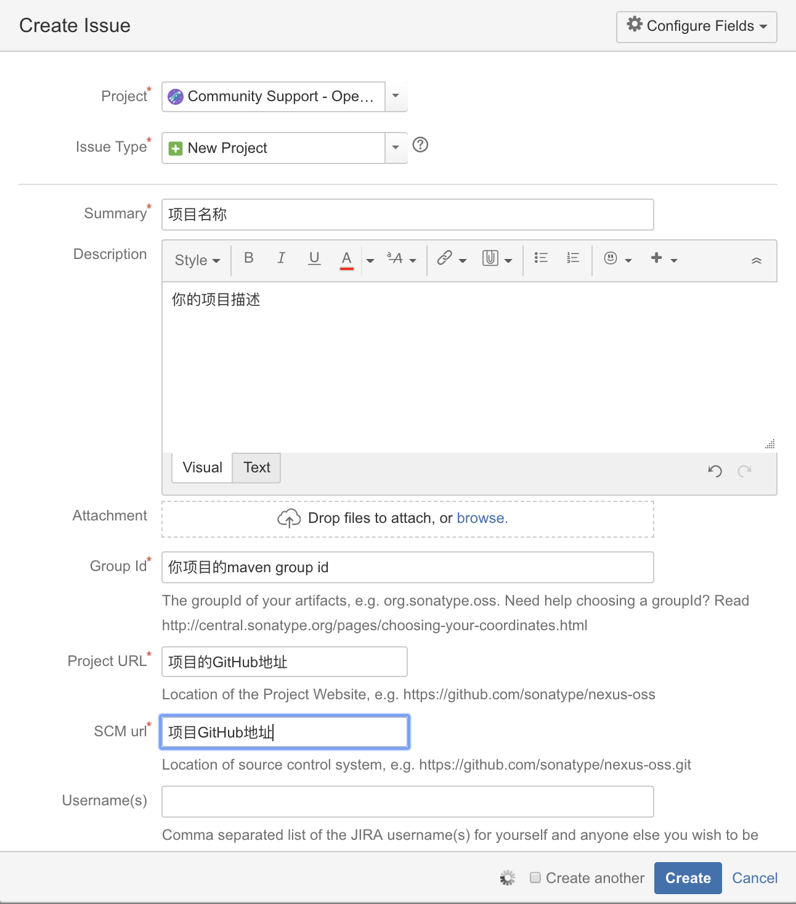

<!DOCTYPE HTML>
<html lang="zh-CN">
<head><meta name="generator" content="Hexo 3.8.0">
    <!--Setting-->
    <meta charset="UTF-8">
    <meta name="viewport" content="width=device-width, user-scalable=no, initial-scale=1.0, maximum-scale=1.0, minimum-scale=1.0">
    <meta http-equiv="X-UA-Compatible" content="IE=Edge,chrome=1">
    <meta http-equiv="Cache-Control" content="no-siteapp">
    <meta http-equiv="Cache-Control" content="no-transform">
    <meta http-equiv="pragma" content="no-cache">
    <meta http-equiv="Cache-Control" content="no-cache, must-revalidate">
    <meta http-equiv="expires" content="Mon Apr 06 2020 02:12:38 GMT+0800 (CST)">
    <meta name="renderer" content="webkit|ie-comp|ie-stand">
    <meta name="apple-mobile-web-app-capable" content="张万众的博客 - 关注Spring Cloud、Docker">
    <meta name="apple-mobile-web-app-status-bar-style" content="black">
    <meta name="format-detection" content="telephone=no,email=no,adress=no">
    <meta name="browsermode" content="application">
    <meta name="screen-orientation" content="portrait">
    <meta name="theme-version" content="1.2.3">
    <meta name="root" content="/">
    
    <!--SEO-->

    <meta name="keywords" content="工作,Sonartype,Maven">


    <meta name="description" content="业余时间写了个轻量级的权限控制框架 light-security ，并发布到了 Maven 中央仓库。发布时的操作步骤还挺多，我这个记性是记不住的，所以记录一下，便于以后查阅，也希望对大家有帮助。
一、Sonartype相关准备工作
前往 https://issues.sonatype.org...">


<meta name="robots" content="all">
<meta name="google" content="all">
<meta name="googlebot" content="all">
<meta name="verify" content="all">
    <!--Title-->


<title>手把手教你如何将项目发布到Maven中央仓库(附步骤及常见问题解决方法) | 张万众的博客 - 关注Spring Cloud、Docker</title>


    <link rel="alternate" href="../../atom.html" title="张万众的博客 - 关注Spring Cloud、Docker" type="application/atom+xml">


    

    


<link rel="stylesheet" href="../../static/css/bootstrap.min-271a649e0635d6fa1b.css">
<link rel="stylesheet" href="../../static/css/font-awesome.min-ac2bebcf7fb5b26.css">
<link rel="stylesheet" href="../../static/css/style-6f3c140f6eee20e6591da00ec0.css">


    


    <script>
        var _hmt = _hmt || [];
        (function() {
            var hm = document.createElement("script");
            hm.src = "https://hm.baidu.com/hm.js?13766878cde148282622871dd245a973";
            var s = document.getElementsByTagName("script")[0];
            s.parentNode.insertBefore(hm, s);
        })();
    </script>


    

</head>

</html>
<!--[if lte IE 8]>
<style>
    html{ font-size: 1em }
</style>
<![endif]-->
<!--[if lte IE 9]>
<div style="ie">你使用的浏览器版本过低，为了你更好的阅读体验，请更新浏览器的版本或者使用其他现代浏览器，比如Chrome、Firefox、Safari等。</div>
<![endif]-->

<body>
    
    <nav class="main-navigation">
    <div class="container">
        <div class="row clearfix">
            <div class="col-md-12 column">
                <nav class="navbar navbar-default" style="background-color:#fff;border:0;margin-bottom:0" role="navigation">
                    <div class="navbar-header">
                        <button type="button" class="navbar-toggle" data-toggle="collapse" data-target="#navbar-collapse-1">
                            <span class="sr-only">切</span>
                            <span class="icon-bar"></span>
                            <span class="icon-bar"></span>
                            <span class="icon-bar"></span>
                        </button>
                        <a class="logo" href="../../index.html">
                            张万众的博客
                        </a>
                    </div>

                    <div class="collapse navbar-collapse" style="border:0;" id="navbar-collapse-1">
                        <ul class="nav navbar-nav">
                            
                                
                                    <li>
                                        <a href="../../about.html" target="_blank">
                                            <i class="fa fa-user"></i>
                                            关于我
                                        </a>
                                    </li>
                                
                            
                                
                                    <li>
                                        <a href="../../archives.html" target="_blank">
                                            <i class="fa fa-archive"></i>
                                            归档
                                        </a>
                                    </li>
                                
                            
                                
                                    <li class="dropdown">
                                        <a href="#" class="dropdown-toggle" data-toggle="dropdown" data-hover="dropdown">
                                            <i class="fa fa-fire"></i>
                                            系列课程
                                            <strong class="caret"></strong>
                                        </a>
                                        <ul class="dropdown-menu">
                                            
                                                <li>
                                                    <a href="../../docker/00-docker-lession-index.html" target="_blank">
                                                        <i class="fa "></i>
                                                        Docker系列教程
                                                    </a>
                                                </li>
                                            
                                                <li>
                                                    <a href="../../spring-cloud/spring-cloud-index.html" target="_blank">
                                                        <i class="fa "></i>
                                                        Spring Cloud系列教程
                                                    </a>
                                                </li>
                                            
                                                <li>
                                                    <a href="../../spring-boot/spring-boot-index.html" target="_blank">
                                                        <i class="fa "></i>
                                                        Spring Boot系列教程
                                                    </a>
                                                </li>
                                            
                                        </ul>
                                    </li>
                                
                            
                                
                                    <li class="dropdown">
                                        <a href="#" class="dropdown-toggle" data-toggle="dropdown" data-hover="dropdown">
                                            <i class="fa fa-book"></i>
                                            开源书
                                            <strong class="caret"></strong>
                                        </a>
                                        <ul class="dropdown-menu">
                                            
                                                <li>
                                                    <a href="../../books/rocketmq.html" target="_blank">
                                                        <i class="fa fa-rocket"></i>
                                                        RocketMQ开发者指南
                                                    </a>
                                                </li>
                                            
                                                <li>
                                                    <a href="../../books/skywalking.html" target="_blank">
                                                        <i class="fa fa-skyatlas"></i>
                                                        Skywalking 6.2.0中文文档
                                                    </a>
                                                </li>
                                            
                                        </ul>
                                    </li>
                                
                            
                                
                                    <li class="dropdown">
                                        <a href="#" class="dropdown-toggle" data-toggle="dropdown" data-hover="dropdown">
                                            <i class="fa fa-cog"></i>
                                            工具
                                            <strong class="caret"></strong>
                                        </a>
                                        <ul class="dropdown-menu">
                                            
                                                <li>
                                                    <a href="../../tools/markdown2.html" target="_blank">
                                                        <i class="fa "></i>
                                                        微信排版工具2.0
                                                    </a>
                                                </li>
                                            
                                        </ul>
                                    </li>
                                
                            
                        </ul>
                        
                            <form id="search-form" class="navbar-form navbar-right">
                                <div class="form-group input-group">
                                    <input type="text" id="local-search-input" class="form-control" placeholder="搜我...">
                                    <span class="input-group-btn">
                                        <a class="btn btn-default">
                                            <i class="fa fa-search"></i>
                                        </a>
                                    </span>
                                </div>
                                <div id="local-search-result" class="local-search-result-cls"></div>
                            </form>
                        
                    </div>
                </nav>
            </div>
        </div>
    </div>
</nav>

    <a href="javascript:;" target="_blank">
        
    </a>


    <section class="content-wrap">
        <div class="container">
            <div class="row">
                <main class="col-md-8 main-content m-post">
                    

<p id="process"></p>
<article class="post">
    <div class="post-head">
        <h1 id="手把手教你如何将项目发布到Maven中央仓库(附步骤及常见问题解决方法)">
            
                手把手教你如何将项目发布到Maven中央仓库(附步骤及常见问题解决方法)
            
        </h1>
        <div class="post-meta">
    
        <span class="categories-meta fa-wrap">
            <i class="fa fa-folder-open-o"></i>
            <a class="category-link" href="../../categories/工作/index.html">工作</a>
        </span>
    

    
        <span class="fa-wrap">
            <i class="fa fa-tags"></i>
            <span class="tags-meta">
                
                    <a class="tag-link" href="javascript:;">Maven</a> <a class="tag-link" href="javascript:;">Sonartype</a> <a class="tag-link" href="../../tags/工作/index.html">工作</a>
                
            </span>
        </span>
    

    
        
        <span class="fa-wrap">
            <i class="fa fa-clock-o"></i>
            <span class="date-meta">2019/04/20</span>
        </span>
        
            <span class="fa-wrap">
                <i class="fa fa-eye"></i>
                <span id="busuanzi_value_page_pv"></span>
            </span>
        
    
</div>
        
        
    </div>
    
    <div class="post-body post-content" id="post-content">
        
    <div class="toc-article">
        <strong>
            目录
        </strong>
        <div class="toc-content">
            <ol class="toc"><li class="toc-item toc-level-2"><a class="toc-link" href="#一、Sonartype相关准备工作"><span class="toc-text">一、Sonartype相关准备工作</span></a></li><li class="toc-item toc-level-2"><a class="toc-link" href="#二、GPG相关准备工作"><span class="toc-text">二、GPG相关准备工作</span></a><ol class="toc-child"><li class="toc-item toc-level-3"><a class="toc-link" href="#2-1-安装GPG"><span class="toc-text">2.1 安装GPG</span></a></li><li class="toc-item toc-level-3"><a class="toc-link" href="#2-2-GPG常用命令"><span class="toc-text">2.2 GPG常用命令</span></a></li><li class="toc-item toc-level-3"><a class="toc-link" href="#2-3-生成秘钥"><span class="toc-text">2.3 生成秘钥</span></a></li><li class="toc-item toc-level-3"><a class="toc-link" href="#2-4-查看本地秘钥"><span class="toc-text">2.4 查看本地秘钥</span></a></li></ol></li><li class="toc-item toc-level-2"><a class="toc-link" href="#三、配置Maven"><span class="toc-text">三、配置Maven</span></a></li><li class="toc-item toc-level-2"><a class="toc-link" href="#四、修改项目版本"><span class="toc-text">四、修改项目版本</span></a></li><li class="toc-item toc-level-2"><a class="toc-link" href="#五、发布"><span class="toc-text">五、发布</span></a></li><li class="toc-item toc-level-2"><a class="toc-link" href="#六、遇到的问题"><span class="toc-text">六、遇到的问题</span></a><ol class="toc-child"><li class="toc-item toc-level-3"><a class="toc-link" href="#6-1-执行-gpg-gen-key-报-Key-generation-failed-Timeout-的异常"><span class="toc-text">6.1 执行 gpg --gen-key 报 Key generation failed: Timeout 的异常</span></a></li><li class="toc-item toc-level-3"><a class="toc-link" href="#6-2-执行mvn-clean-install-deploy-P-release-时，报gpg-signing-failed-Inappropriate-ioctl-for-device"><span class="toc-text">6.2 执行mvn clean install deploy -P release 时，报gpg: signing failed: Inappropriate ioctl for device</span></a></li><li class="toc-item toc-level-3"><a class="toc-link" href="#6-3-连不上-https-oss-sonatype-org"><span class="toc-text">6.3 连不上 https://oss.sonatype.org</span></a></li></ol></li><li class="toc-item toc-level-2"><a class="toc-link" href="#七、参考文档"><span class="toc-text">七、参考文档</span></a></li></ol>
        </div>
    </div>


        <p>业余时间写了个轻量级的权限控制框架 <a href="javascript:;" target="_blank" rel="noopener">light-security</a> ，并发布到了 <code>Maven</code> 中央仓库。发布时的操作步骤还挺多，我这个记性是记不住的，所以记录一下，便于以后查阅，也希望对大家有帮助。</p>
<h2 id="一、Sonartype相关准备工作"><a href="#一、Sonartype相关准备工作" class="headerlink" title="一、Sonartype相关准备工作"></a>一、Sonartype相关准备工作</h2><ul>
<li><p>前往 <a href="javascript:;" target="_blank" rel="noopener">https://issues.sonatype.org/</a> 注册账号，并<strong>记好账号和密码，后面有用</strong>。</p>
</li>
<li><p>前往 <a href="javascript:;" target="_blank" rel="noopener">https://issues.sonatype.org/secure/Dashboard.jspa</a> ，点击导航栏上的 <code>Create</code> 按钮，并按提示填写项目信息：</p>
<p></p>
<p>个人为项目  <code>light-security-spring-boot-starter</code> 填写的信息如 <a href="javascript:;" target="_blank" rel="noopener">https://issues.sonatype.org/browse/OSSRH-47914</a> 所示，供大家参考。</p>
</li>
<li><p>创建 <code>Issue</code> 后，等待审核即可。一般会在一个工作日内审核完成。<strong>当Issue的Status变为<code>RESOLVED</code> 或 <code>FIXED</code> 后，即可进行下一步操作</strong>。</p>
</li>
</ul>
<h2 id="二、GPG相关准备工作"><a href="#二、GPG相关准备工作" class="headerlink" title="二、GPG相关准备工作"></a>二、GPG相关准备工作</h2><h3 id="2-1-安装GPG"><a href="#2-1-安装GPG" class="headerlink" title="2.1 安装GPG"></a>2.1 安装GPG</h3><p>Mac安装GPG：</p>
<figure class="highlight shell"><table><tr><td class="gutter"><pre><span class="line">1</span><br></pre></td><td class="code"><pre><span class="line">brew install gpg</span><br></pre></td></tr></table></figure>
<p>Ubuntu安装GPG：</p>
<figure class="highlight shell"><table><tr><td class="gutter"><pre><span class="line">1</span><br></pre></td><td class="code"><pre><span class="line">sudo apt-get install gnupg</span><br></pre></td></tr></table></figure>
<h3 id="2-2-GPG常用命令"><a href="#2-2-GPG常用命令" class="headerlink" title="2.2 GPG常用命令"></a>2.2 GPG常用命令</h3><figure class="highlight shell"><table><tr><td class="gutter"><pre><span class="line">1</span><br><span class="line">2</span><br><span class="line">3</span><br><span class="line">4</span><br><span class="line">5</span><br></pre></td><td class="code"><pre><span class="line">gpg --version 检查安装成功没</span><br><span class="line">gpg --gen-key 生成密钥对</span><br><span class="line">gpg --list-keys 查看公钥</span><br><span class="line">gpg --keyserver 服务器地址 --send-keys 公钥ID 将公钥发布到 PGP 密钥服务器</span><br><span class="line">gpg --keyserver 服务器地址 --recv-keys 公钥ID 查询公钥是否发布成功</span><br></pre></td></tr></table></figure>
<h3 id="2-3-生成秘钥"><a href="#2-3-生成秘钥" class="headerlink" title="2.3 生成秘钥"></a>2.3 生成秘钥</h3><figure class="highlight shell"><table><tr><td class="gutter"><pre><span class="line">1</span><br><span class="line">2</span><br></pre></td><td class="code"><pre><span class="line">gpg --gen-key</span><br><span class="line">按照提示输入姓名/邮箱，然后按O即可生成。</span><br></pre></td></tr></table></figure>
<p>如果遇到问题，可详见”遇到的问题一节”。</p>
<h3 id="2-4-查看本地秘钥"><a href="#2-4-查看本地秘钥" class="headerlink" title="2.4 查看本地秘钥"></a>2.4 查看本地秘钥</h3><figure class="highlight shell"><table><tr><td class="gutter"><pre><span class="line">1</span><br></pre></td><td class="code"><pre><span class="line">gpg --list-keys</span><br></pre></td></tr></table></figure>
<p>结果类似如下：</p>
<figure class="highlight shell"><table><tr><td class="gutter"><pre><span class="line">1</span><br><span class="line">2</span><br><span class="line">3</span><br><span class="line">4</span><br><span class="line">5</span><br><span class="line">6</span><br><span class="line">7</span><br></pre></td><td class="code"><pre><span class="line">➜  ~ gpg --list-keys</span><br><span class="line">/Users/itmuch.com/.gnupg/pubring.kbx</span><br><span class="line">------------------------------------</span><br><span class="line">pub   rsa2048 2019-04-20 [SC] [有效至：2021-04-19]</span><br><span class="line">      [xxxxxxxxx]</span><br><span class="line">uid           [ 绝对 ] itmuch.com &lt;eacdy0000@126.com&gt;</span><br><span class="line">sub   rsa2048 2019-04-20 [E] [有效至：2021-04-19]</span><br></pre></td></tr></table></figure>
<h2 id="三、配置Maven"><a href="#三、配置Maven" class="headerlink" title="三、配置Maven"></a>三、配置Maven</h2><blockquote>
<p><strong>TIPS</strong></p>
<p>可参考官方文档配置  <code>https://central.sonatype.org/pages/apache-maven.html</code> </p>
</blockquote>
<p>1 修改项目的pom.xml，添加如下内容：</p>
<figure class="highlight xml"><table><tr><td class="gutter"><pre><span class="line">1</span><br><span class="line">2</span><br><span class="line">3</span><br><span class="line">4</span><br><span class="line">5</span><br><span class="line">6</span><br><span class="line">7</span><br><span class="line">8</span><br><span class="line">9</span><br><span class="line">10</span><br><span class="line">11</span><br><span class="line">12</span><br><span class="line">13</span><br><span class="line">14</span><br><span class="line">15</span><br><span class="line">16</span><br><span class="line">17</span><br><span class="line">18</span><br><span class="line">19</span><br><span class="line">20</span><br><span class="line">21</span><br><span class="line">22</span><br><span class="line">23</span><br><span class="line">24</span><br><span class="line">25</span><br><span class="line">26</span><br><span class="line">27</span><br><span class="line">28</span><br><span class="line">29</span><br><span class="line">30</span><br><span class="line">31</span><br><span class="line">32</span><br><span class="line">33</span><br><span class="line">34</span><br><span class="line">35</span><br><span class="line">36</span><br><span class="line">37</span><br><span class="line">38</span><br><span class="line">39</span><br><span class="line">40</span><br><span class="line">41</span><br><span class="line">42</span><br><span class="line">43</span><br><span class="line">44</span><br><span class="line">45</span><br><span class="line">46</span><br><span class="line">47</span><br><span class="line">48</span><br><span class="line">49</span><br><span class="line">50</span><br><span class="line">51</span><br><span class="line">52</span><br><span class="line">53</span><br><span class="line">54</span><br><span class="line">55</span><br><span class="line">56</span><br><span class="line">57</span><br><span class="line">58</span><br><span class="line">59</span><br><span class="line">60</span><br><span class="line">61</span><br><span class="line">62</span><br><span class="line">63</span><br><span class="line">64</span><br><span class="line">65</span><br><span class="line">66</span><br><span class="line">67</span><br><span class="line">68</span><br><span class="line">69</span><br><span class="line">70</span><br><span class="line">71</span><br><span class="line">72</span><br><span class="line">73</span><br><span class="line">74</span><br><span class="line">75</span><br><span class="line">76</span><br><span class="line">77</span><br><span class="line">78</span><br><span class="line">79</span><br><span class="line">80</span><br><span class="line">81</span><br><span class="line">82</span><br><span class="line">83</span><br><span class="line">84</span><br><span class="line">85</span><br><span class="line">86</span><br><span class="line">87</span><br><span class="line">88</span><br><span class="line">89</span><br><span class="line">90</span><br><span class="line">91</span><br><span class="line">92</span><br><span class="line">93</span><br><span class="line">94</span><br><span class="line">95</span><br><span class="line">96</span><br><span class="line">97</span><br><span class="line">98</span><br><span class="line">99</span><br><span class="line">100</span><br><span class="line">101</span><br><span class="line">102</span><br><span class="line">103</span><br></pre></td><td class="code"><pre><span class="line"><span class="tag">&lt;<span class="name">licenses</span>&gt;</span></span><br><span class="line">  <span class="tag">&lt;<span class="name">license</span>&gt;</span></span><br><span class="line">    <span class="tag">&lt;<span class="name">name</span>&gt;</span>The Apache Software License, Version 2.0<span class="tag">&lt;/<span class="name">name</span>&gt;</span></span><br><span class="line">    <span class="tag">&lt;<span class="name">url</span>&gt;</span>http://www.apache.org/licenses/LICENSE-2.0.txt<span class="tag">&lt;/<span class="name">url</span>&gt;</span></span><br><span class="line">  <span class="tag">&lt;/<span class="name">license</span>&gt;</span></span><br><span class="line"><span class="tag">&lt;/<span class="name">licenses</span>&gt;</span></span><br><span class="line"></span><br><span class="line"><span class="tag">&lt;<span class="name">developers</span>&gt;</span></span><br><span class="line">  <span class="tag">&lt;<span class="name">developer</span>&gt;</span></span><br><span class="line">    <span class="tag">&lt;<span class="name">name</span>&gt;</span>itmuch<span class="tag">&lt;/<span class="name">name</span>&gt;</span></span><br><span class="line">    <span class="tag">&lt;<span class="name">email</span>&gt;</span>eacdy0000@126.com<span class="tag">&lt;/<span class="name">email</span>&gt;</span></span><br><span class="line">    <span class="tag">&lt;<span class="name">url</span>&gt;</span>https://github.com/eacdy<span class="tag">&lt;/<span class="name">url</span>&gt;</span></span><br><span class="line">  <span class="tag">&lt;/<span class="name">developer</span>&gt;</span></span><br><span class="line"><span class="tag">&lt;/<span class="name">developers</span>&gt;</span></span><br><span class="line"></span><br><span class="line"><span class="tag">&lt;<span class="name">scm</span>&gt;</span></span><br><span class="line">  <span class="tag">&lt;<span class="name">url</span>&gt;</span>https://github.com/eacdy/light-security<span class="tag">&lt;/<span class="name">url</span>&gt;</span></span><br><span class="line">  <span class="tag">&lt;<span class="name">connection</span>&gt;</span>https://github.com/eacdy/light-security.git<span class="tag">&lt;/<span class="name">connection</span>&gt;</span></span><br><span class="line">  <span class="tag">&lt;<span class="name">developerConnection</span>&gt;</span>https://github.com/eacdy<span class="tag">&lt;/<span class="name">developerConnection</span>&gt;</span></span><br><span class="line"><span class="tag">&lt;/<span class="name">scm</span>&gt;</span></span><br><span class="line"></span><br><span class="line"><span class="tag">&lt;<span class="name">distributionManagement</span>&gt;</span></span><br><span class="line">  <span class="tag">&lt;<span class="name">snapshotRepository</span>&gt;</span></span><br><span class="line">    <span class="tag">&lt;<span class="name">id</span>&gt;</span>ossrh<span class="tag">&lt;/<span class="name">id</span>&gt;</span></span><br><span class="line">    <span class="tag">&lt;<span class="name">url</span>&gt;</span>https://oss.sonatype.org/content/repositories/snapshots<span class="tag">&lt;/<span class="name">url</span>&gt;</span></span><br><span class="line">  <span class="tag">&lt;/<span class="name">snapshotRepository</span>&gt;</span></span><br><span class="line">  <span class="tag">&lt;<span class="name">repository</span>&gt;</span></span><br><span class="line">    <span class="tag">&lt;<span class="name">id</span>&gt;</span>ossrh<span class="tag">&lt;/<span class="name">id</span>&gt;</span></span><br><span class="line">    <span class="tag">&lt;<span class="name">url</span>&gt;</span>https://oss.sonatype.org/service/local/staging/deploy/maven2/<span class="tag">&lt;/<span class="name">url</span>&gt;</span></span><br><span class="line">  <span class="tag">&lt;/<span class="name">repository</span>&gt;</span></span><br><span class="line"><span class="tag">&lt;/<span class="name">distributionManagement</span>&gt;</span></span><br><span class="line"></span><br><span class="line"><span class="tag">&lt;<span class="name">profiles</span>&gt;</span></span><br><span class="line">  <span class="tag">&lt;<span class="name">profile</span>&gt;</span></span><br><span class="line">    <span class="tag">&lt;<span class="name">id</span>&gt;</span>release<span class="tag">&lt;/<span class="name">id</span>&gt;</span></span><br><span class="line">    <span class="tag">&lt;<span class="name">build</span>&gt;</span></span><br><span class="line">      <span class="tag">&lt;<span class="name">plugins</span>&gt;</span></span><br><span class="line">        <span class="tag">&lt;<span class="name">plugin</span>&gt;</span></span><br><span class="line">          <span class="tag">&lt;<span class="name">groupId</span>&gt;</span>org.sonatype.plugins<span class="tag">&lt;/<span class="name">groupId</span>&gt;</span></span><br><span class="line">          <span class="tag">&lt;<span class="name">artifactId</span>&gt;</span>nexus-staging-maven-plugin<span class="tag">&lt;/<span class="name">artifactId</span>&gt;</span></span><br><span class="line">          <span class="tag">&lt;<span class="name">version</span>&gt;</span>1.6.7<span class="tag">&lt;/<span class="name">version</span>&gt;</span></span><br><span class="line">          <span class="tag">&lt;<span class="name">extensions</span>&gt;</span>true<span class="tag">&lt;/<span class="name">extensions</span>&gt;</span></span><br><span class="line">          <span class="tag">&lt;<span class="name">configuration</span>&gt;</span></span><br><span class="line">            <span class="tag">&lt;<span class="name">serverId</span>&gt;</span>ossrh<span class="tag">&lt;/<span class="name">serverId</span>&gt;</span></span><br><span class="line">            <span class="tag">&lt;<span class="name">nexusUrl</span>&gt;</span>https://oss.sonatype.org/<span class="tag">&lt;/<span class="name">nexusUrl</span>&gt;</span></span><br><span class="line">            <span class="tag">&lt;<span class="name">autoReleaseAfterClose</span>&gt;</span>true<span class="tag">&lt;/<span class="name">autoReleaseAfterClose</span>&gt;</span></span><br><span class="line">          <span class="tag">&lt;/<span class="name">configuration</span>&gt;</span></span><br><span class="line">        <span class="tag">&lt;/<span class="name">plugin</span>&gt;</span></span><br><span class="line">        <span class="tag">&lt;<span class="name">plugin</span>&gt;</span></span><br><span class="line">          <span class="tag">&lt;<span class="name">groupId</span>&gt;</span>org.apache.maven.plugins<span class="tag">&lt;/<span class="name">groupId</span>&gt;</span></span><br><span class="line">          <span class="tag">&lt;<span class="name">artifactId</span>&gt;</span>maven-release-plugin<span class="tag">&lt;/<span class="name">artifactId</span>&gt;</span></span><br><span class="line">          <span class="tag">&lt;<span class="name">version</span>&gt;</span>2.5<span class="tag">&lt;/<span class="name">version</span>&gt;</span></span><br><span class="line">          <span class="tag">&lt;<span class="name">configuration</span>&gt;</span></span><br><span class="line">            <span class="tag">&lt;<span class="name">autoVersionSubmodules</span>&gt;</span>true<span class="tag">&lt;/<span class="name">autoVersionSubmodules</span>&gt;</span></span><br><span class="line">            <span class="tag">&lt;<span class="name">useReleaseProfile</span>&gt;</span>false<span class="tag">&lt;/<span class="name">useReleaseProfile</span>&gt;</span></span><br><span class="line">            <span class="tag">&lt;<span class="name">releaseProfiles</span>&gt;</span>release<span class="tag">&lt;/<span class="name">releaseProfiles</span>&gt;</span></span><br><span class="line">            <span class="tag">&lt;<span class="name">goals</span>&gt;</span>deploy<span class="tag">&lt;/<span class="name">goals</span>&gt;</span></span><br><span class="line">          <span class="tag">&lt;/<span class="name">configuration</span>&gt;</span></span><br><span class="line">        <span class="tag">&lt;/<span class="name">plugin</span>&gt;</span></span><br><span class="line">        <span class="tag">&lt;<span class="name">plugin</span>&gt;</span></span><br><span class="line">          <span class="tag">&lt;<span class="name">groupId</span>&gt;</span>org.apache.maven.plugins<span class="tag">&lt;/<span class="name">groupId</span>&gt;</span></span><br><span class="line">          <span class="tag">&lt;<span class="name">artifactId</span>&gt;</span>maven-source-plugin<span class="tag">&lt;/<span class="name">artifactId</span>&gt;</span></span><br><span class="line">          <span class="tag">&lt;<span class="name">version</span>&gt;</span>2.2.1<span class="tag">&lt;/<span class="name">version</span>&gt;</span></span><br><span class="line">          <span class="tag">&lt;<span class="name">executions</span>&gt;</span></span><br><span class="line">            <span class="tag">&lt;<span class="name">execution</span>&gt;</span></span><br><span class="line">              <span class="tag">&lt;<span class="name">id</span>&gt;</span>attach-sources<span class="tag">&lt;/<span class="name">id</span>&gt;</span></span><br><span class="line">              <span class="tag">&lt;<span class="name">goals</span>&gt;</span></span><br><span class="line">                <span class="tag">&lt;<span class="name">goal</span>&gt;</span>jar-no-fork<span class="tag">&lt;/<span class="name">goal</span>&gt;</span></span><br><span class="line">              <span class="tag">&lt;/<span class="name">goals</span>&gt;</span></span><br><span class="line">            <span class="tag">&lt;/<span class="name">execution</span>&gt;</span></span><br><span class="line">          <span class="tag">&lt;/<span class="name">executions</span>&gt;</span></span><br><span class="line">        <span class="tag">&lt;/<span class="name">plugin</span>&gt;</span></span><br><span class="line">        <span class="tag">&lt;<span class="name">plugin</span>&gt;</span></span><br><span class="line">          <span class="tag">&lt;<span class="name">groupId</span>&gt;</span>org.apache.maven.plugins<span class="tag">&lt;/<span class="name">groupId</span>&gt;</span></span><br><span class="line">          <span class="tag">&lt;<span class="name">artifactId</span>&gt;</span>maven-javadoc-plugin<span class="tag">&lt;/<span class="name">artifactId</span>&gt;</span></span><br><span class="line">          <span class="tag">&lt;<span class="name">version</span>&gt;</span>2.9.1<span class="tag">&lt;/<span class="name">version</span>&gt;</span></span><br><span class="line">          <span class="tag">&lt;<span class="name">executions</span>&gt;</span></span><br><span class="line">            <span class="tag">&lt;<span class="name">execution</span>&gt;</span></span><br><span class="line">              <span class="tag">&lt;<span class="name">id</span>&gt;</span>attach-javadocs<span class="tag">&lt;/<span class="name">id</span>&gt;</span></span><br><span class="line">              <span class="tag">&lt;<span class="name">goals</span>&gt;</span></span><br><span class="line">                <span class="tag">&lt;<span class="name">goal</span>&gt;</span>jar<span class="tag">&lt;/<span class="name">goal</span>&gt;</span></span><br><span class="line">              <span class="tag">&lt;/<span class="name">goals</span>&gt;</span></span><br><span class="line">            <span class="tag">&lt;/<span class="name">execution</span>&gt;</span></span><br><span class="line">          <span class="tag">&lt;/<span class="name">executions</span>&gt;</span></span><br><span class="line">        <span class="tag">&lt;/<span class="name">plugin</span>&gt;</span></span><br><span class="line">        <span class="tag">&lt;<span class="name">plugin</span>&gt;</span></span><br><span class="line">          <span class="tag">&lt;<span class="name">groupId</span>&gt;</span>org.apache.maven.plugins<span class="tag">&lt;/<span class="name">groupId</span>&gt;</span></span><br><span class="line">          <span class="tag">&lt;<span class="name">artifactId</span>&gt;</span>maven-gpg-plugin<span class="tag">&lt;/<span class="name">artifactId</span>&gt;</span></span><br><span class="line">          <span class="tag">&lt;<span class="name">version</span>&gt;</span>1.5<span class="tag">&lt;/<span class="name">version</span>&gt;</span></span><br><span class="line">          <span class="tag">&lt;<span class="name">executions</span>&gt;</span></span><br><span class="line">            <span class="tag">&lt;<span class="name">execution</span>&gt;</span></span><br><span class="line">              <span class="tag">&lt;<span class="name">id</span>&gt;</span>sign-artifacts<span class="tag">&lt;/<span class="name">id</span>&gt;</span></span><br><span class="line">              <span class="tag">&lt;<span class="name">phase</span>&gt;</span>verify<span class="tag">&lt;/<span class="name">phase</span>&gt;</span></span><br><span class="line">              <span class="tag">&lt;<span class="name">goals</span>&gt;</span></span><br><span class="line">                <span class="tag">&lt;<span class="name">goal</span>&gt;</span>sign<span class="tag">&lt;/<span class="name">goal</span>&gt;</span></span><br><span class="line">              <span class="tag">&lt;/<span class="name">goals</span>&gt;</span></span><br><span class="line">            <span class="tag">&lt;/<span class="name">execution</span>&gt;</span></span><br><span class="line">          <span class="tag">&lt;/<span class="name">executions</span>&gt;</span></span><br><span class="line">        <span class="tag">&lt;/<span class="name">plugin</span>&gt;</span></span><br><span class="line">      <span class="tag">&lt;/<span class="name">plugins</span>&gt;</span></span><br><span class="line">    <span class="tag">&lt;/<span class="name">build</span>&gt;</span></span><br><span class="line">  <span class="tag">&lt;/<span class="name">profile</span>&gt;</span></span><br><span class="line"><span class="tag">&lt;/<span class="name">profiles</span>&gt;</span></span><br></pre></td></tr></table></figure>
<p>可参考我的配置：<a href="javascript:;" target="_blank" rel="noopener">https://github.com/eacdy/light-security/blob/master/light-security-spring-boot-starter/pom.xml</a></p>
<p>2 修改 <code>$MAVEN_HOME/conf/settings.xml</code> 文件(即你的Maven配置文件)，添加如下内容：</p>
<figure class="highlight xml"><table><tr><td class="gutter"><pre><span class="line">1</span><br><span class="line">2</span><br><span class="line">3</span><br><span class="line">4</span><br><span class="line">5</span><br><span class="line">6</span><br><span class="line">7</span><br><span class="line">8</span><br></pre></td><td class="code"><pre><span class="line"><span class="tag">&lt;<span class="name">server</span>&gt;</span></span><br><span class="line">  <span class="comment">&lt;!-- 这里的ID要和distributionManagement.repository.id一致 --&gt;</span></span><br><span class="line">  <span class="tag">&lt;<span class="name">id</span>&gt;</span>ossrh<span class="tag">&lt;/<span class="name">id</span>&gt;</span></span><br><span class="line">  <span class="comment">&lt;!-- https://issues.sonatype.org/的账号 --&gt;</span></span><br><span class="line">  <span class="tag">&lt;<span class="name">username</span>&gt;</span>账号<span class="tag">&lt;/<span class="name">username</span>&gt;</span></span><br><span class="line">  <span class="comment">&lt;!-- https://issues.sonatype.org/的密码 --&gt;</span></span><br><span class="line">  <span class="tag">&lt;<span class="name">password</span>&gt;</span>密码<span class="tag">&lt;/<span class="name">password</span>&gt;</span></span><br><span class="line"><span class="tag">&lt;/<span class="name">server</span>&gt;</span></span><br></pre></td></tr></table></figure>
<h2 id="四、修改项目版本"><a href="#四、修改项目版本" class="headerlink" title="四、修改项目版本"></a>四、修改项目版本</h2><p>用如下命令，修改项目的版本，例如<code>1.0.1-RELEASE</code> 。</p>
<figure class="highlight shell"><table><tr><td class="gutter"><pre><span class="line">1</span><br></pre></td><td class="code"><pre><span class="line">mvn versions:set -DnewVersion=1.0.1-RELEASE</span><br></pre></td></tr></table></figure>
<p>当然也可手动修改版本，不过当项目比较复杂，module比较多时，手动修改就会比较麻烦，而且容易出错。建议用命令修改。</p>
<h2 id="五、发布"><a href="#五、发布" class="headerlink" title="五、发布"></a>五、发布</h2><p>执行如下命令即可将依赖发布到中央仓库。</p>
<figure class="highlight shell"><table><tr><td class="gutter"><pre><span class="line">1</span><br></pre></td><td class="code"><pre><span class="line">mvn clean install deploy -P release</span><br></pre></td></tr></table></figure>
<p>不出意外，构建会报xxx服务器无法找到GPG的异常。原因是前文生成的秘钥尚未发布到key server。keyserver的地址会在异常中打印出来。我的项目报的是 <code>http://keys.gnupg.net:11371/</code> 。于是执行</p>
<figure class="highlight shell"><table><tr><td class="gutter"><pre><span class="line">1</span><br><span class="line">2</span><br></pre></td><td class="code"><pre><span class="line">gpg --keyserver  http://keys.gnupg.net:11371/ --send-keys [xxxxxxxxx]</span><br><span class="line">其中的[xxxxxxxxx]，可用gpg --list-keys显示出来。</span><br></pre></td></tr></table></figure>
<p>然后再次执行如下命令：</p>
<figure class="highlight shell"><table><tr><td class="gutter"><pre><span class="line">1</span><br></pre></td><td class="code"><pre><span class="line">mvn clean install deploy -P release</span><br></pre></td></tr></table></figure>
<p>此时即可发布成功。发布完使用如下命令重置为SNAPSHOT版本</p>
<figure class="highlight shell"><table><tr><td class="gutter"><pre><span class="line">1</span><br></pre></td><td class="code"><pre><span class="line">mvn versions:set -DnewVersion=1.0.2-SNAPHOST</span><br></pre></td></tr></table></figure>
<h2 id="六、遇到的问题"><a href="#六、遇到的问题" class="headerlink" title="六、遇到的问题"></a>六、遇到的问题</h2><h3 id="6-1-执行-gpg-gen-key-报-Key-generation-failed-Timeout-的异常"><a href="#6-1-执行-gpg-gen-key-报-Key-generation-failed-Timeout-的异常" class="headerlink" title="6.1 执行 gpg --gen-key 报 Key generation failed: Timeout 的异常"></a>6.1 执行 <code>gpg --gen-key</code> 报 <code>Key generation failed: Timeout</code> 的异常</h3><p>解决方案：</p>
<figure class="highlight shell"><table><tr><td class="gutter"><pre><span class="line">1</span><br><span class="line">2</span><br></pre></td><td class="code"><pre><span class="line">rm -rf ~/.gnupg</span><br><span class="line">gpg --gen-key</span><br></pre></td></tr></table></figure>
<h3 id="6-2-执行mvn-clean-install-deploy-P-release-时，报gpg-signing-failed-Inappropriate-ioctl-for-device"><a href="#6-2-执行mvn-clean-install-deploy-P-release-时，报gpg-signing-failed-Inappropriate-ioctl-for-device" class="headerlink" title="6.2 执行mvn clean install deploy -P release 时，报gpg: signing failed: Inappropriate ioctl for device"></a>6.2 执行<code>mvn clean install deploy -P release</code> 时，报<code>gpg: signing failed: Inappropriate ioctl for device</code></h3><p>原因是当前终端无法弹出密码输入页面。</p>
<p>解决方案：</p>
<figure class="highlight shell"><table><tr><td class="gutter"><pre><span class="line">1</span><br><span class="line">2</span><br></pre></td><td class="code"><pre><span class="line">export GPG_TTY=$(tty)</span><br><span class="line">mvn clean install deploy -P release</span><br></pre></td></tr></table></figure>
<h3 id="6-3-连不上-https-oss-sonatype-org"><a href="#6-3-连不上-https-oss-sonatype-org" class="headerlink" title="6.3 连不上 https://oss.sonatype.org"></a>6.3 连不上 <code>https://oss.sonatype.org</code></h3><ul>
<li>科学上网（在某些城市有被查水表、罚款的风险），自己找梯子吧；</li>
<li>飞到香港、澳门或者海外等能没有墙的地方，然后发布应用，发布完再回国（一种人傻钱多的方式）；</li>
<li>移民（更彻底的解决方案，但如果想看抗日神剧或者听某些国内音乐，可能要用梯子翻回来）……</li>
</ul>
<blockquote>
<p><strong>TIPS</strong></p>
<p>如果你在发布时遇到其他问题，也可添加我的微信 <code>jumping_me</code> ，我尽量帮助到你。</p>
</blockquote>
<h2 id="七、参考文档"><a href="#七、参考文档" class="headerlink" title="七、参考文档"></a>七、参考文档</h2><ul>
<li><a href="javascript:;" target="_blank" rel="noopener">官方文档</a></li>
<li><a href="javascript:;" target="_blank" rel="noopener">如何发布jar包到maven中央仓库</a></li>
<li><a href="javascript:;" target="_blank" rel="noopener">发布项目至maven中央仓库汇总（流程+问题）</a></li>
<li><a href="javascript:;" target="_blank" rel="noopener">向maven中央仓库提交jar</a></li>
<li><a href="javascript:;" target="_blank" rel="noopener">gpg: signing failed: Inappropriate ioctl for device</a></li>
<li><a href="javascript:;" target="_blank" rel="noopener">Git 生成GPG key 报错 <code>Key generation failed: Timeout</code> 的解决方法</a></li>
</ul>

        <h2>相关文章</h2><ul><li><a href="../git-repo-sync-with-gitlab-mirrors/index.html">使用GitLab Mirrors同步Git仓库</a></li><li><a href="../../work-sum-log4j-to-logback/index.html">将应用的log4j换成logback</a></li><li><a href="../../other/idea-mybatis-warning/index.html">Intellij IDEA中Mybatis Mapper自动注入警告的6种解决方案</a></li><li><a href="../../other/doc-generate/index.html">分享：如何生成漂亮的静态文档说明页</a></li><li><a href="../../other/mybatis-optional-support/index.html">我最喜欢的Mybatis 3.5新特性——Optional支持</a></li></ul>
    </div>
    
    <div class="post-footer">
        <div class="col-sm-10">
            <div>
                <b>本文链接</b>：<a href="" target="_blank">手把手教你如何将项目发布到Maven中央仓库(附步骤及常见问题解决方法)</a>
            </div>
            <div>
                
                    转载声明：本博客由张万众创作，采用 <a href="javascript:;" target="_blank"> CC BY 3.0 CN </a> 许可协议。可自由转载、引用，但需署名作者且注明文章出处。如转载至微信公众号，请在文末添加作者公众号二维码。
                
            </div>
            <div>
                
            </div>
        </div>
        <div class="col-sm-2">
            
        </div>
    </div>
</article>

<div class="article-nav prev-next-wrap clearfix">
    
        <a target="_blank" href="../../spring-boot/actuator-prometheus-grafana/index.html" class="pre-post btn btn-default" title="Spring Boot 2.x监控数据可视化(Actuator + Prometheus + Grafana手把手)">
            <i class="fa fa-angle-left fa-fw"></i><span class="hidden-lg">上一篇</span>
            <span class="hidden-xs">Spring Boot 2.x监控数据可视化(Actuator + Prometheus + Grafana手把手)</span>
        </a>
    
    
        <a target="_blank" href="../../spring-cloud-alibaba/04-nacos-config/index.html" class="next-post btn btn-default" title="Spring Cloud Alibaba系列教程-04-使用Nacos管理配置">
            <span class="hidden-lg">下一篇</span>
            <span class="hidden-xs">Spring Cloud Alibaba系列教程-04-使用Nacos管理配置</span><i class="fa fa-angle-right fa-fw"></i>
        </a>
    
</div>


    <div id="comments">
        
   <p>评论系统未开启，无法评论！</p>

    </div>


                </main>
                
    <aside class="col-md-4 sidebar">
        
        <div class="widget about-me">
    <div class="row">
        <div class="col-md-5">
            
        </div>
        <div class="col-md-7">
            <a class="series-a" href="javascript:void(0)">公众号</a>
            <ul>
                <li>• 技术干货推送</li>
                <li>• 免费资料领取</li>
                <li><b>• 扫码领取更多惊喜</b></li>
            </ul>
        </div>
    </div>
    
        <div class="row">
            <div class="col-md-5">
                
            </div>
            <div class="col-md-7">
                <a class="series-a" href="javascript:void(0)">小程序</a>
                <ul>
                    <li>• 原创笔记</li>
                    <li>• 独家心法</li>
                    <li><b>• 扫码领取</b></li>
                </ul>
            </div>
        </div>
    
</div>


        
        
    <div class="ad">
        <div class="row">
            <div class="col-md-12">
                <a href="javascript:;" rel="nofollow" target="_blank">
                    
                </a>
            </div>
        </div>
    </div>


        
        <div class="widget">
    <div class="row">
        <div class="col-md-3">
            
        </div>
        <div class="col-md-9">
            <a class="series-a" target="_blank" href="../../spring-cloud/spring-cloud-index.html">Spring Cloud系列教程</a>
            <p>全面、通俗易懂的Spring Cloud教程</p>
        </div>
    </div>
    <div class="row">
        <div class="col-md-3">
            
        </div>
        <div class="col-md-9">
            <a class="series-a" target="_blank" href="javascript:;">Spring Cloud Alibaba视频教程</a>
            <p>全网唯一，你值得拥有</p>
        </div>
    </div>
    <div class="row">
        <div class="col-md-3">
            
        </div>
        <div class="col-md-9">
            <a class="series-a" target="_blank" href="../../docker/00-docker-lession-index.html">Docker系列教程</a>
            <p>Docker系列</p>
        </div>
    </div>
    <div class="row">
        <div class="col-md-3">
            
        </div>
        <div class="col-md-9">
            <a class="series-a" target="_blank" href="../../spring-boot/spring-boot-index.html">Spring Boot系列教程</a>
            <p>Boot是基石...</p>
        </div>
    </div>
</div>


        
        
    <div class="widget">
        <h3 class="title">分类</h3>
        <ul class="category-list"><li class="category-list-item"><a class="category-list-link" href="javascript:;"><i class="fa" aria-hidden="true">Docker</i></a><span class="category-list-count">31</span></li><li class="category-list-item"><a class="category-list-link" href="javascript:;"><i class="fa" aria-hidden="true">Kubernetes</i></a><span class="category-list-count">2</span></li><li class="category-list-item"><a class="category-list-link" href="javascript:;"><i class="fa" aria-hidden="true">Spring Boot</i></a><span class="category-list-count">6</span></li><li class="category-list-item"><a class="category-list-link" href="javascript:;"><i class="fa" aria-hidden="true">Spring Cloud</i></a><span class="category-list-count">94</span></li><li class="category-list-item"><a class="category-list-link" href="javascript:;"><i class="fa" aria-hidden="true">Spring Cloud Alibaba</i></a><span class="category-list-count">16</span></li><li class="category-list-item"><a class="category-list-link" href="javascript:;"><i class="fa" aria-hidden="true">Spring Cloud Stream</i></a><span class="category-list-count">1</span></li><li class="category-list-item"><a class="category-list-link" href="../../categories/其他/index.html"><i class="fa" aria-hidden="true">其他</i></a><span class="category-list-count">13</span></li><li class="category-list-item"><a class="category-list-link" href="../../categories/安装教程/index.html"><i class="fa" aria-hidden="true">安装教程</i></a><span class="category-list-count">7</span></li><li class="category-list-item"><a class="category-list-link current" href="../../categories/工作/index.html"><i class="fa" aria-hidden="true">工作</i></a><span class="category-list-count">20</span></li></ul>
    </div>


        
        
        
        

        
    </aside>

            </div>
        </div>
    </section>
    <footer class="main-footer">
    <div class="container">
        <div class="row">
        </div>
    </div>
</footer>

<a id="back-to-top" class="icon-btn hide">
	<i class="fa fa-chevron-up"></i>
</a>


    <div class="copyright">
    <div class="container">
        <div class="row">
            <div class="col-sm-12">
                <div class="busuanzi">
    
        访问量:
        <strong id="busuanzi_value_site_pv">
            <i class="fa fa-spinner fa-spin"></i>
        </strong>
        &nbsp; | &nbsp;
        访客数:
        <strong id="busuanzi_value_site_uv">
            <i class="fa fa-spinner fa-spin"></i>
        </strong>
        &nbsp; <strong>Since 2018-12-26</strong>
    
</div>

            </div>
            <div class="col-sm-12">
                <span>Copyright &copy; 2017
                </span> |
                <span>
                    Powered by <a href="javascript:;" class="copyright-links" target="_blank" rel="nofollow">Hexo</a>
                </span> |
                <span>
                    Theme by <a href="javascript:;" class="copyright-links" target="_blank" rel="nofollow">ITMuch</a>
                </span>
            </div>
        </div>
    </div>
</div>

<script src="../../static/js/jquery.min.js"></script>
<script src="../../static/js/bootstrap.min.js"></script>
<script src="../../static/js/bootstrap-hover-dropdown.min.js"></script>

    <script src="../../static/js/search-3f4fbd0557c869ca0516ebb5f.js"></script>


    <script async="" src="../../static/js/busuanzi.pure.mini.js"></script>


<script src="../../static/js/app-da10bb3b2ae5c8348d2bd2cc3faf.js"></script>


</body>
